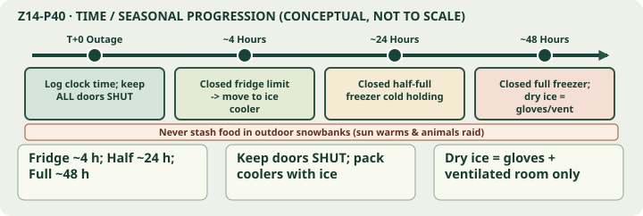

Z14-P40 · Food production and preservation · New manuscript
Protect cold food during power outages using door discipline and safe ice limits
Extend safe cold-holding hours safely during outages while avoiding carbon-dioxide suffocation or frostbite from dry ice.
When it applies · Refrigerators and freezers when electrical power drops during storms or grid failures.
Equipment · Appliance thermometers, outage log, insulated coolers, block ice or frozen water jugs, and gloves/ventilation if dry ice is used.

Actions
- Keep refrigerator and freezer doors SHUT tight—an unopened refrigerator holds safe temps roughly 4 hours, a full unopened freezer holds roughly 48 hours, and a half-full freezer holds roughly 24 hours; group meats tightly on one side/tray so thawing juices never drip onto other foods.[F04, F05, P17]
- For outages expected to exceed 4 hours, transfer critical refrigerated perishables into an insulated cooler packed tightly with block ice or frozen water jugs (checking cooler thermometer stays ≤40°F), and NEVER stash perishable food outdoors in snowbanks where daytime sun warms packages and animals raid them.[P17, F04]
- If dry ice is used in a freezer during an extended blackout, wear heavy insulated gloves (never touch bare skin—instant frostbite!), place dry ice on cardboard above food, and keep the room VENTILATED because dry ice sublimates into heavy carbon dioxide gas.[P17]
Failure recognition · Opening the freezer door every hour to "check if things are still frozen," dumping cold air out and spoiling $500 of food in 12 hours.[F05, P17]
Verify · Confirm power-off time logged, doors stayed shut, frozen jugs/ice coolers ready for >4-hour outages, and dry-ice gloves/ventilation enforced.[F04, F05, P17]
Stop or change course · Never guess food safety once cold limits expire—open doors only to read the thermometer and sort items cleanly against official discard charts.[F04, F05]
Evidence and editorial notes
- F04 · USDA / FDA / CDC · Food Safety During Power Outage (current web edition)
- Section: Refrigerated food and power outages · Conditions: Refrigerator starts cold; keep door closed
Support: An unopened refrigerator keeps food cold for about four hours. Follow the per-item discard chart after loss of temperature control. Never taste to test.
Limitations: Door openings accelerate warming; appliance thermometer is needed to verify temperature. · Conflicting evidence: None; retained for Z15 reconstruction.
Editorial note: Maintains five-pack integrity. · Specialist reviewer: Food safety and household preparedness
Primary source · checked 2026-11-24 - F05 · USDA / FDA / CDC · Food Safety During Power Outage (current web edition)
- Section: Frozen food and power outages · Conditions: Freezer door closed; typical household unit
Support: A full freezer holds temperature about 48 hours, a half-full freezer about 24. Use ice crystals or measured 40°F or below to evaluate refreezing where the chart permits.
Limitations: Varies by freezer insulation, ambient room temperature, and door seals. · Conflicting evidence: None; retained for Z15 reconstruction.
Editorial note: Maintains five-pack integrity. · Specialist reviewer: Food safety and household preparedness
Primary source · checked 2026-11-24 - P17 · USDA / FDA / CDC · Food Safety During Power Outage (current web edition)
- Section: Refrigeration Loss, Insulated Coolers, and Discard Boundaries · Conditions: Power outages or appliance failures affecting home food stocks
Support: Use appliance thermometers in both fridge (≤40°F) and freezer (≤0°F), group frozen foods tightly, avoid opening doors unnecessarily, use block/dry ice with ventilation precautions only when available, and discard perishable items held above 40°F over two hours.
Limitations: Dry ice sublimates into carbon dioxide gas and causes severe frostbite on bare skin; handle with gloves and ventilate spaces. · Conflicting evidence: None; integrates Z14 cold-chain protection with Z15-R03.
Editorial note: Links food preservation stocks to outage triage and safe discard gates. · Specialist reviewer: Food safety and emergency management
Primary source · checked 2026-11-24
Source lineage · USDA/FDA/CDC FoodSafety.gov; new manuscript · Classification · New manuscript.